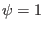
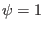

Consider the Jacobian of the form
where  and
and  are arbitrary integers which can be appropriately chosen by
users, and
are arbitrary integers which can be appropriately chosen by
users, and  are constants included for normalization. In the
iterative metric method of solving fixed boundary equilibrium problem, we
first construct a coordinates transformation
(this transformation is arbitrary except
for that surface  coincides with the last closed flux surface), then
solve the GS equation in
coordinate system to get the value
of
are constants included for normalization. In the
iterative metric method of solving fixed boundary equilibrium problem, we
first construct a coordinates transformation
(this transformation is arbitrary except
for that surface  coincides with the last closed flux surface), then
solve the GS equation in
coordinate system to get the value
of  at grid points, and finally adjust the value of
to make surface
at grid points, and finally adjust the value of
to make surface
 lies on a magnetic
surface. It is obvious the Jacobian of the final transformation we obtained
usually does not satisfy the constraint given by Eq. (463) since we do
not use any information of Eq. (463) in the above steps. Now comes the
question: how to make the transformation obtained above satisfy the constraint
Eq. (463) through adjusting the values of
lies on a magnetic
surface. It is obvious the Jacobian of the final transformation we obtained
usually does not satisfy the constraint given by Eq. (463) since we do
not use any information of Eq. (463) in the above steps. Now comes the
question: how to make the transformation obtained above satisfy the constraint
Eq. (463) through adjusting the values of  ? To make the
constraint Eq. (463) satisfied, and should satisfy the
relation
? To make the
constraint Eq. (463) satisfied, and should satisfy the
relation
which
Using Eq. (), we obtain
normalized to  , the normalized is written as
, the normalized is written as
yj
2018-03-09